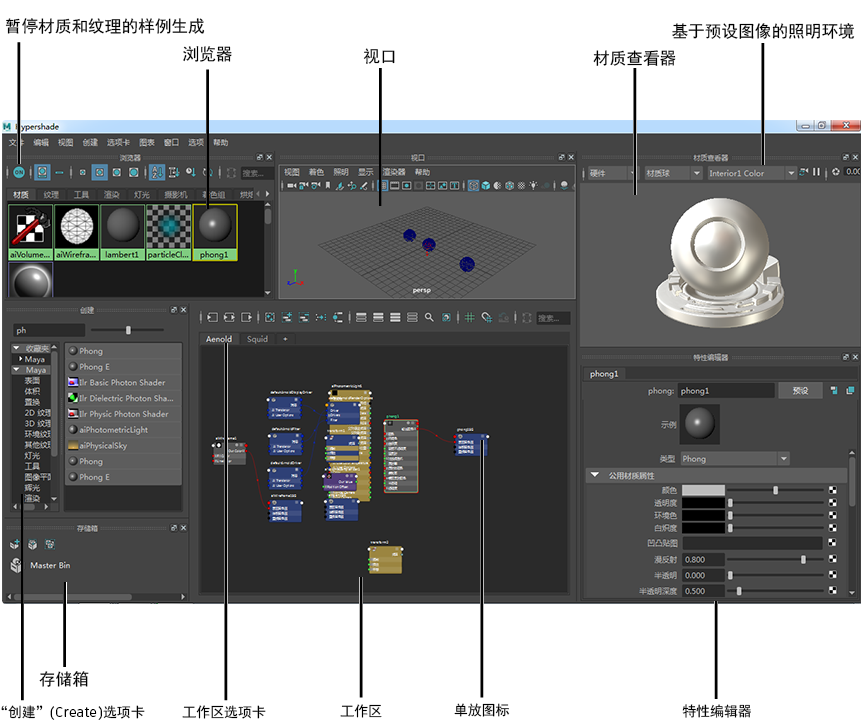

Hypershade 是美工人员友好的直观工具，允许您轻松地构建和编辑材质，并在 Viewport 2.0 中实时可视化结果。通过允许您执行以下操作，它优化了外观开发工作流：
- 在节点编辑界面中构建着色器，其中节点是在为外观开发而优化的自定义视图中创建的。
- 在复杂着色网络中工作的同时，Solo 节点以预览其输出并识别问题。
- 通过停靠、取消停靠和重新排列面板，创建涵盖外观开发工作流的自定义布局。
- 使用特性编辑器（其中仅显示常用的属性）编辑材质。
- 在材质查看器中预览纹理、凹凸贴图和着色器。
- 通过使用工作区中的选项卡，同时处理多个着色器图表。
- 通过暂停材质和纹理的样例生成，避免等待样例进行渲染。
单击状态行上的  可打开 Hypershade。
可打开 Hypershade。
